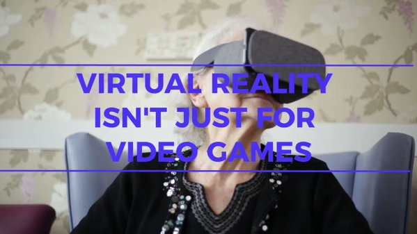

VRTU is a company whose goal is to aid in the care for patients with Dementia by taking an innovative approach to Reminiscence Therapy
|  | Virtual Reminiscence Therapy expands on the already practiced Dementia treatment, Reminiscence Therapy. The difference is, Reminiscence Therapy is practiced by physically creating scenes from a patient's past. Often, people with Dementia cannot afford normal Reminiscence Therapy. |
| VRTU created an app which contains a gallery of virtual environments or "historic scenes" for the user to chose from. Each of these virtual environments is specifically designed for people with Dementia to trigger memories from their past. | |
| The app is designed with the average consumer in mind. It can run on an average VR-ready smartphone and mobile VR headset. In contrast with regular Reminiscence Therapy, VRTU is cost effective as there is no need to build historical sets by hand or put money into building a scene. In addition to the time, money, and energy needed to build an "historical scene", the therapy may have no affect on the patient whatsoever. With all of this in mind, the VRTU app is a much more enticing alternative. | |
| Trials have been conducted with encouraging responses. Caregivers said after using the app, the patients had increased communication and were recalling memories from their past. |